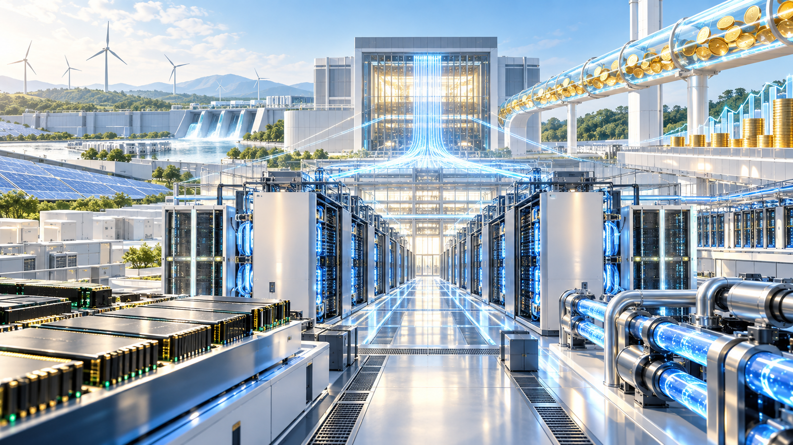
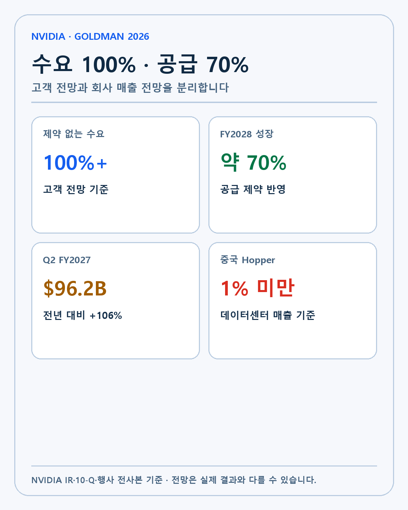
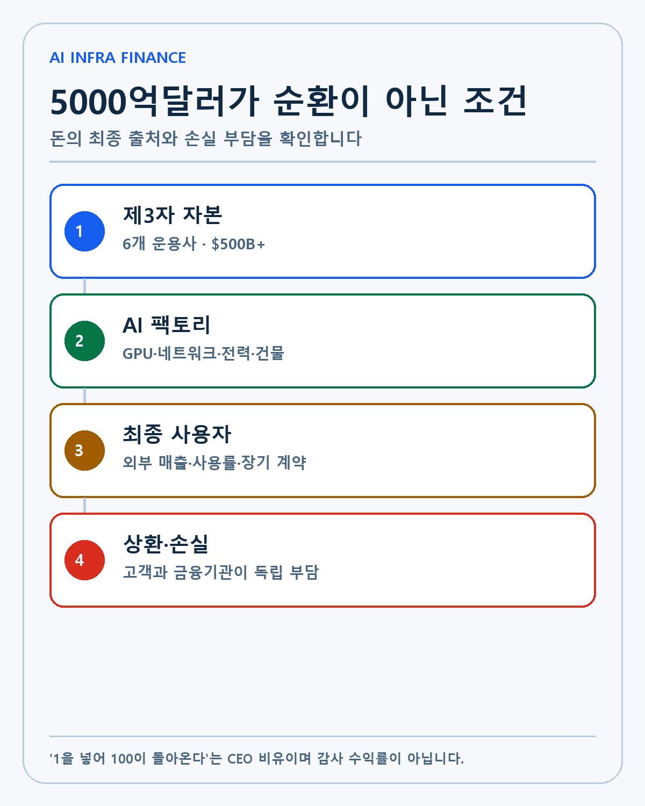
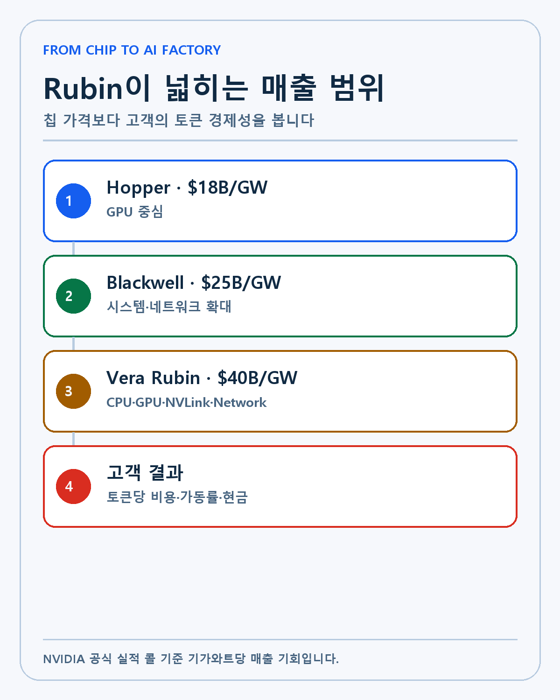
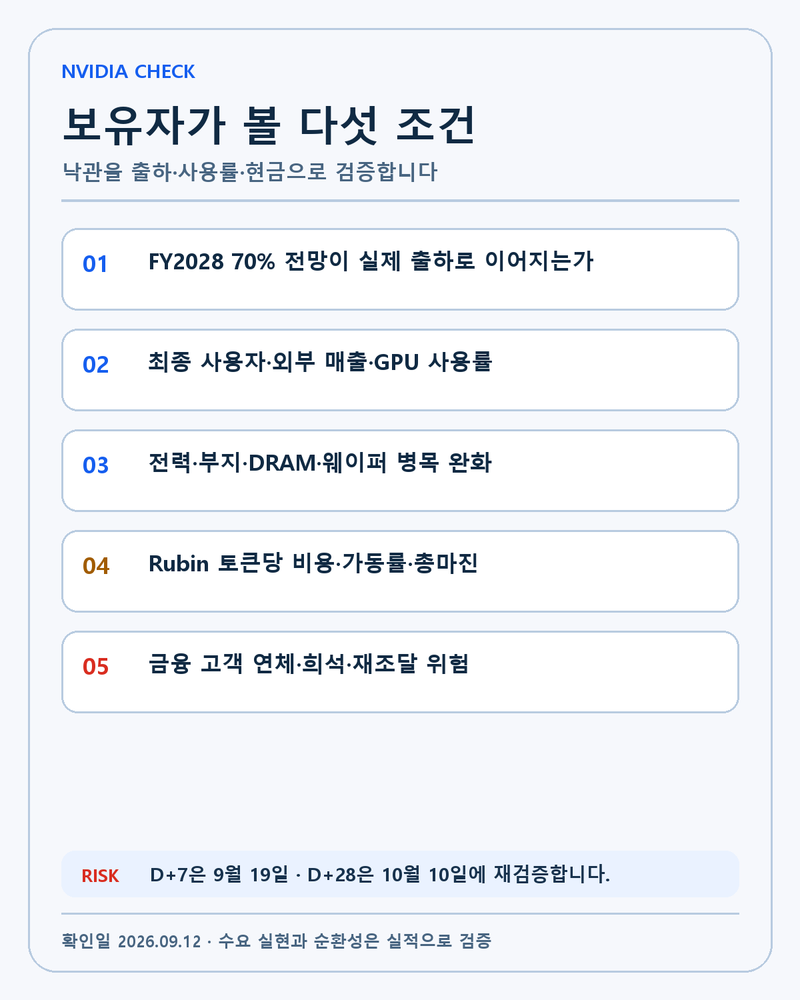

NVIDIA · DEEP RESEARCH
NVIDIA Goldman Sachs 대담 분석: 수요 100%·공급 70%와 5000억달러 AI 금융의 검증 조건
NVIDIA의 수요 100%·공급 70% 전망과 5000억달러 AI 금융을 출하·전력·사용률·순환금융 조건으로 분석합니다.

NVIDIA CEO Jensen Huang이 2026년 9월 10일 Goldman Sachs Communacopia + Technology Conference에서 AI 인프라 수요, 공급 제약과 금융 구조를 설명했습니다. 투자자에게 가장 중요한 숫자는 고객 전망이 가리키는 100% 이상의 제약 없는 수요 성장과 NVIDIA가 실제 공급으로 달성할 수 있다고 보는 약 70%의 FY2028 매출 성장입니다.
저는 NVIDIA를 장기 보유하고 있고 포트폴리오 비중도 큽니다. AI 시대의 연산과 네트워크, 시스템·소프트웨어를 가장 넓게 묶은 핵심 플레이어라고 판단합니다. 집중은 의도적인 선택입니다. 다만 투자 논리가 강할수록 수요의 독립성과 고객 경제성, 자금의 흐름을 더 엄격하게 확인해야 합니다.
이번 대담에는 낙관적인 수요 설명과 순환금융 반론이 함께 나왔습니다. Huang은 NVIDIA가 1을 투자하면 100이 돌아온다고 주장했습니다. 이 말은 감사된 투자수익률이 아니라 CEO의 비유입니다. 본문에서는 회사가 확인한 실적, 경영진 전망, 제 해석과 UNKNOWN을 분리합니다.
대담과 실적의 기준선
| 항목 | 확인된 내용 | 검증해야 할 것 |
|---|---|---|
| FY2028 매출 성장 전망 | 약 70% | 실제 공급·출하·매출 인식 |
| 고객 수요 전망 | 100% 이상 | 중복·선구매·취소 가능성 |
| AI 인프라 금융 | 5000억달러 초과 | 제3자 자본·위험의 독립성 |
| Q2 FY2027 매출 | 962억달러, 전년 +106% | 높은 기준선 이후 성장 |
| 데이터센터 매출 | 890억달러 | 고객 집중·총마진·현금 |
| 중국향 Hopper | 데이터센터 매출 1% 미만 | 중국 제외 수요의 지속성 |

NVIDIA의 공식 FY2027 2분기 실적 콜 전사본에서 CFO Colette Kress는 FY2028 매출이 약 70% 성장할 것으로 예상한다고 밝혔습니다. 고객 전망은 성장이 두 배에 이를 수 있음을 가리키지만 회사는 공급 제약을 반영해 약 70%를 제시했습니다.
Goldman 행사에서 Huang은 그 전망을 다시 지지했습니다. 수요보다 공급이 성장의 제한 요소라는 주장입니다. 70%는 회사 전망이고 100%는 고객이 제시한 제약 없는 수요입니다. 두 숫자를 실제 매출로 더하거나 확정 계약처럼 쓰면 안 됩니다.
수요 100%는 어떤 데이터인가
고객 수요 전망은 하이퍼스케일러와 AI 연구소, 네오클라우드, 기업과 지역 AI 사업자의 예상 주문을 합친 값입니다. NVIDIA는 공급망과 OEM, 데이터센터 파트너를 통해 부품뿐 아니라 부지·전력·건물과 최종 사용계약까지 본다고 설명합니다.
이 가시성은 전통적인 반도체 회사보다 깊을 수 있습니다. GPU 주문만 받는 것이 아니라 AI 팩토리를 설계하고 네트워크와 시스템, 소프트웨어를 함께 공급합니다. 고객의 전력 계획과 데이터센터 건설, 자금조달에 관여하면 실제 가동 시점을 더 일찍 알 수 있습니다.
수요 전망에는 위험도 있습니다. 고객이 공급을 확보하려고 실제 필요보다 크게 주문할 수 있습니다. 같은 프로젝트가 여러 공급사와 금융기관의 파이프라인에 중복될 가능성도 있습니다. 공급이 부족할 때 앞당긴 주문은 병목이 풀리면 조정될 수 있습니다.
수요의 질을 확인하려면 주문서보다 최종 사용계약과 외부 고객 매출, GPU 사용률을 봐야 합니다. 고객이 AI 서비스를 팔아 현금을 만들고 그 현금으로 장비와 이자를 갚는다면 수요는 독립적입니다. NVIDIA의 자금과 보증이 멈추면 프로젝트도 멈춘다면 순환성 위험이 커집니다.
공급 70%를 막는 병목
NVIDIA가 언급한 상류 병목은 웨이퍼와 첨단 패키징, DRAM·LPDDR, 커넥터와 전압조정기입니다. GPU 하나를 만들어도 메모리와 네트워크, 전력 부품과 서버 랙이 함께 준비돼야 합니다. 공급망의 가장 느린 부품이 전체 출하 속도를 결정합니다.
하류 병목은 부지·전력·건물입니다. AI 팩토리는 대규모 전력 연결과 냉각, 변전설비가 필요합니다. GPU 생산이 완료돼도 데이터센터가 준비되지 않으면 고객 인도와 매출 인식, 실제 가동이 늦어집니다.

Huang은 부품 공급보다 데이터센터 전력과 부지에 더 큰 걱정을 표시했습니다. NVIDIA의 규모와 장기 공급사 관계로 하드웨어 부품을 확보할 수 있지만 전력망과 인허가, 건물은 지역마다 시간이 걸립니다.
공급 제약은 단기적으로 가격 결정력과 백로그를 지지합니다. 장기적으로는 경쟁사와 고객 맞춤형 ASIC이 공급을 늘릴 시간을 줍니다. 병목이 해자와 매출 지연을 동시에 만들 수 있다는 뜻입니다.
5000억달러 금융 플랫폼의 구조
NVIDIA는 Apollo, BlackRock, Blackstone, Brookfield, Goldman Sachs와 KKR 등 6개 운용사와 독립적인 컴퓨팅 금융 플랫폼을 발표했습니다. Goldman Sachs Asset Management의 공식 발표는 5000억달러가 넘는 제3자 자본을 AI 인프라 건설에 동원하는 것이 목표라고 설명합니다.
AI 팩토리는 GPU 구매만으로 끝나지 않습니다. 부지와 전력, 냉각, 네트워크, 건물과 운영자금이 필요합니다. 기술 회사의 현금만으로 모두 조달하기 어렵습니다. 장기 자산운용사와 인프라 투자자가 참여하면 자본비용과 만기를 프로젝트 현금흐름에 맞출 수 있습니다.
NVIDIA 입장에서는 금융이 판매 채널입니다. 고객이 시스템을 사고 싶어도 초기 자본이 부족하면 매출이 발생하지 않습니다. 장비와 사용계약을 담보로 자금을 만들면 네오클라우드와 지역 사업자가 컴퓨팅을 확보할 수 있습니다.
금융기관 입장에서는 NVIDIA 시스템의 임대료와 사용계약을 인프라 현금흐름으로 평가합니다. A100과 Hopper 같은 구형 세대도 임대 시장에서 사용된다면 잔존가치가 생깁니다. 반대로 기술 세대가 빠르게 바뀌고 임대료가 떨어지면 담보가치와 대출 회수가 약해질 수 있습니다.
순환금융 논란의 핵심
Goldman 행사 전사본에서 Huang은 NVIDIA가 1을 투자하면 100이 돌아온다고 말했습니다. NVIDIA의 작은 전략 투자와 지원이 큰 외부 자금과 확정 사용계약을 끌어오고, 결과적으로 시스템 매출로 돌아온다는 설명입니다.
이 숫자는 공시된 투자수익률이 아닙니다. 프로젝트별 NVIDIA 투자액과 매출, 손실 위험을 합산한 감사 수치도 아닙니다. CEO가 순환금융 비판에 답하며 든 비유로 읽어야 합니다.
Axios의 분석은 Huang이 AI 산업과 NVIDIA의 성장을 낙관적으로 설명할 이해관계가 있다고 지적합니다. NVIDIA가 투자한 고객의 주가가 오르고 그 고객이 다시 NVIDIA 장비를 사는 구조는 외부 수요와 내부 지원의 경계를 흐릴 수 있습니다.
순환 여부는 돈이 한 바퀴 도는 모양만으로 결정되지 않습니다. 고객의 최종 사용자가 실제 비용을 지불하고, 금융기관이 독립적으로 신용 위험을 평가하며, 장비가 NVIDIA 추가 지원 없이도 현금을 창출한다면 일반적인 공급자 금융에 가깝습니다.
반대로 고객의 매출 대부분이 NVIDIA와 관계사 지원에서 나오고, 프로젝트 손실을 NVIDIA가 사실상 보전하며, 장비 사용률이 낮은데도 주문이 반복되면 순환성이 커집니다. 현금의 최종 출처와 손실 부담 주체를 확인해야 합니다.
962억달러 실적이 주는 증거
NVIDIA FY2027 2분기 10-Q에 따르면 매출은 962억달러로 전년 대비 106%, 전분기 대비 18% 늘었습니다. 데이터센터 매출은 890억달러였습니다. 중국향 Hopper는 데이터센터 매출의 1% 미만이었습니다.
중국 출하가 제한된 상태에서도 전체 매출이 두 배 넘게 성장했습니다. 미국 하이퍼스케일러와 AI 연구소, 네오클라우드, 기업·지역 AI 수요가 큰 기준선입니다. 회사의 수요 설명이 단순한 미래 이야기만은 아니라는 증거입니다.
기준선이 높다는 점은 위험입니다. 962억달러에서 70% 성장하려면 절대 매출 증가액이 매우 큽니다. 고객 CAPEX와 전력, 데이터센터 건설이 동시에 늘어야 합니다. 100% 수요 전망이 실제 매출로 바뀌는 비율을 분기마다 확인해야 합니다.
Hopper에서 Rubin으로 콘텐츠가 넓어집니다
NVIDIA는 AI 팩토리의 기가와트당 매출 기회를 Hopper 약 180억달러, Blackwell 250억달러, Vera Rubin 400억달러로 설명했습니다. 공식 실적 콜 전사본과 Goldman 행사 요약에서 같은 세대별 수치를 확인할 수 있습니다.
기가와트당 매출 기회는 GPU 한 개 가격이 아닙니다. Vera CPU와 Rubin GPU, NVLink, InfiniBand 또는 Ethernet, 시스템과 소프트웨어를 포함합니다. 세대가 바뀔수록 NVIDIA가 데이터센터 예산에서 가져가는 범위가 넓어집니다.

고객은 장비 가격보다 토큰당 비용과 전력당 처리량을 봅니다. 더 비싼 시스템이 같은 전력에서 더 많은 유료 토큰을 만들고 서비스 수익을 높이면 경제성이 있습니다. 사용률과 매출이 낮으면 높은 시스템 가격은 부채 부담으로 바뀝니다.
이 때문에 Rubin의 성공은 출하량만으로 판단하기 어렵습니다. 고객 가동률, 토큰 가격과 서비스 매출, 에너지 비용, NVIDIA 총마진과 장비 임대료를 함께 봐야 합니다.
엔비디아의 해자는 어디에 있는가
첫 번째 해자는 CUDA와 소프트웨어 생태계입니다. 고객이 모델과 데이터 파이프라인을 NVIDIA 도구에 맞춰 구축하면 다른 가속기로 옮기는 비용이 커집니다.
두 번째는 NVLink와 네트워크, 시스템 설계입니다. 거대한 모델과 에이전트 워크로드는 GPU 한 개의 성능보다 수천 개 칩이 데이터를 주고받는 구조에 영향을 받습니다. NVIDIA는 칩·네트워크·소프트웨어를 함께 최적화합니다.
세 번째는 공급망과 고객 가시성입니다. TSMC와 메모리·부품 업체, OEM·클라우드와 장기 계획을 맞추고 데이터센터의 전력과 부지까지 추적합니다. 공급망 규모가 후발 주자의 출하 속도를 어렵게 만듭니다.
해자가 영구적이라는 보장은 없습니다. 고객은 비용과 협상력을 위해 자체 ASIC과 경쟁 GPU를 늘립니다. 전력당 성능과 소프트웨어 호환성, 총소유비용에서 경쟁사가 격차를 줄이면 NVIDIA 콘텐츠와 마진이 압박받을 수 있습니다.
고객 경제성을 숫자로 확인하는 순서
첫째는 GPU 사용률입니다. 장비가 설치돼도 실제 추론과 학습에 쓰이지 않으면 임대료와 서비스 매출이 나오지 않습니다. 예약된 용량과 실제 사용량을 구분해야 합니다.
둘째는 토큰당 비용과 판매가격입니다. Rubin이 같은 전력에서 더 많은 토큰을 만들더라도 AI 서비스 가격이 더 빠르게 내려가면 고객 이익은 제한될 수 있습니다. 처리량과 단가를 함께 봅니다.
셋째는 이자와 감가상각 이후의 현금입니다. 네오클라우드는 장비 구매비와 전력·운영비, 차입 이자를 감당해야 합니다. EBITDA만 흑자여도 원금 상환과 교체 CAPEX를 빼면 현금이 부족할 수 있습니다.
마지막은 장비의 잔존가치입니다. 구형 GPU가 계속 임대되고 다른 모델과 워크로드에 전환될 수 있다면 담보가치가 남습니다. 새 세대가 기존 장비를 빠르게 대체하면 금융기관과 고객의 손실 위험이 커집니다. 이 네 단계가 확인돼야 5000억달러 금융이 지속 가능한 수요가 됩니다.
보유자로서 받아들이는 집중
NVIDIA와 Palantir 비중이 큰 것은 사실입니다. 저는 두 회사를 AI 시대의 핵심 플레이어로 분석했고 그 집중을 받아들이고 있습니다. 단순히 많이 올랐기 때문에 보유하는 것이 아니라 산업의 연산과 운영 레이어를 각각 장악한다고 보기 때문입니다.
비중이 크다는 사실만으로 잘못된 투자가 되지는 않습니다. 기술 해자, 경영진, 성장률과 현금흐름이 계속 확인된다면 장기 보유할 수 있습니다. 가격 변동만으로 투자 논리를 바꾸지 않습니다.
제가 판단을 바꿀 조건은 기술 경쟁력 약화, 플랫폼 전환 실패, 고객의 AI 경제성 붕괴, 공급망 실행 실패와 경영진의 자본배분 변화입니다. 순환금융 논란은 이 조건 중 고객 경제성과 자본배분을 검증하는 질문입니다.
세 가지 시나리오
강세 시나리오는 최종 사용자가 AI 서비스 비용을 실제로 지불하고 제3자 금융기관이 독립적으로 위험을 부담하며 공급 확대가 약 70% 성장으로 이어지는 경우입니다. Rubin의 높은 콘텐츠가 고객 수익성과 NVIDIA 총마진을 함께 높여야 합니다.
기준 시나리오는 수요가 강하지만 전력·부지·메모리·패키징 병목으로 출하가 늦어지는 경우입니다. 계약이 유지돼도 매출 인식은 분기마다 흔들릴 수 있습니다. 긴 백로그와 공급 제약을 구분해야 합니다.
약세 시나리오는 고객 주문이 중복되거나 선구매였고 네오클라우드의 현금흐름이 약해 재조달이 막히는 경우입니다. NVIDIA의 투자와 지원이 없으면 프로젝트가 유지되지 않는다면 순환금융 비판이 강해집니다.
앞으로 확인할 다섯 항목
- FY2028 약 70% 전망이 실제 분기 출하와 매출로 이어지는지 확인합니다.
- 고객 사용계약의 최종 지불자와 외부 매출, GPU 사용률을 봅니다.
- 전력·부지·건물과 DRAM·웨이퍼 병목의 완화 속도를 기록합니다.
- Vera Rubin의 토큰당 비용, 가동률, 임대료와 총마진을 확인합니다.
- 금융 대상 고객의 연체·희석·재조달과 NVIDIA의 손실 부담을 봅니다.

다음 확인일은 9월 19일과 10월 10일입니다. D+7에는 전력·금융 프로젝트와 공급망 발표를 갱신합니다. D+28에는 고객 가동과 외부 자금이 계약과 현금으로 이어지는지 확인합니다.
제 투자 판단
이번 대담은 NVIDIA의 장기 투자 논리를 강화했습니다. 수요가 약해졌다는 신호보다 공급과 전력·금융이 성장 속도를 제한한다는 설명이 확인됐습니다. 회사는 칩 판매를 넘어 AI 팩토리 전체의 기술·공급·자본 구조를 설계하려 합니다.
경영진의 낙관을 그대로 확정 사실로 받아들이지는 않겠습니다. 100% 수요와 1대100이라는 발언은 실제 고객 현금흐름과 독립 금융, 출하와 총마진으로 검증해야 합니다. 기술 방향은 긍정적이고 검증 조건은 더 구체적으로 만들겠습니다.
저의 투자 순서는 기술, 해자, 창업자와 경영진, 성장률, 현금흐름입니다. NVIDIA는 앞의 네 항목에서 강한 증거를 보여줍니다. 마지막 현금흐름의 질과 고객 경제성이 유지되는지 계속 확인하겠습니다.
이 글은 개인 투자 기록이며 특정 종목의 매수·매도를 권유하지 않습니다. 경영진 전망과 발언은 실제 결과와 다를 수 있고 높은 성장 기대가 주가에 반영돼 있을 수 있습니다. 모든 투자 판단과 책임은 투자자 본인에게 있습니다.
작성 방법
2026년 9월 12일 기준 공식 자료와 공시를 우선하고 실제·회사 전망·시나리오·UNKNOWN을 분리했습니다.
개인 투자 기록이며 특정 종목의 매수·매도를 권유하지 않습니다.